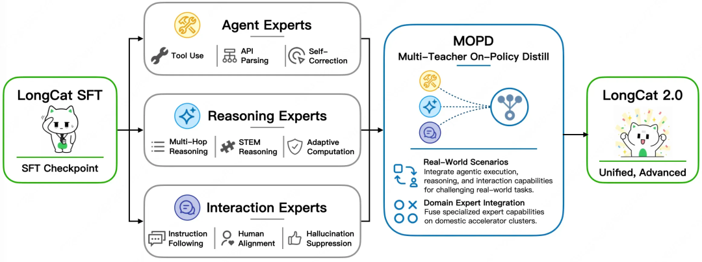

一、导语
2026 年 6 月 30 日，美团正式发布新一代万亿参数大模型 LongCat-2.0，并宣布全面开源。这是业界首个在五万卡国产算力集群上完成全流程训练与推理的万亿参数模型，标志着中国 AI 算力自主可控迈出了里程碑式的一步。
LongCat-2.0 总参数规模达 1.6T（1.6 万亿），平均激活参数约 48B，动态范围覆盖 33B~56B。它从零开始预训练，原生支持 1M 超长上下文，架构设计围绕一个核心目标——让模型在真实的 Agentic Coding 任务中更高效、更稳定地完成代码理解、生成与执行。预览版发布后，月调用量已跻身 OpenRouter 全球前三，在 Hermes 中位列全球第一。
二、背景分析：为什么 LongCat-2.0 意义非凡？
LongCat 团队对国产算力的探索始于 2023 年，三年来从千卡起步，逐步攻克算子适配、通信优化、分布式稳定性等基础难题。此前，美国对华芯片出口管制不断加码，英伟达高端 AI 芯片（如 H100、B200）对华供应持续受限。在此背景下，能否在国产算力平台上训练出世界级的万亿参数模型，成为衡量中国 AI 产业自主能力的关键标尺。
LongCat-2.0 正是在这一历史节点上给出了答案——它不仅「能训出来」，而且「能稳定运行」。通过 HCCL 异常处理、弹性扩缩卡和自动故障恢复，月均日故障率降低 70% 以上；通过流水线调度、显存优化和算子级控核，训练 MFU 提升 1.5 倍，最终实现稳态日吞吐超过 1T tokens/day。
三、核心内容：架构创新与基准测试
LSA 稀疏注意力：1M 超长上下文的秘密
传统 Transformer 模型在处理超过 100K 上下文后就开始「遗忘」前面的内容。LongCat-2.0 采用 LongCat Sparse Attention（LSA）稀疏注意力机制，智能筛选关键信息而非逐字逐句关注全部 token，将计算量从平方级降至线性级。这使得模型在 100 万 Token 的超长上下文中，依然保持精准的信息定位与理解能力——一个 Agent 可以「看见」整个代码库。
零计算专家 + ScMoE：让算力用在刀刃上
代码任务中不同 token 的复杂度差异巨大——定义一个变量名和推导一个递归算法对算力的需求完全不同。LongCat-2.0 通过零计算专家实现 token 级动态激活（33B~56B 范围），简单 token 不消耗任何算力，复杂 token 自动获得更多计算资源。这意味着模型在大规模推理时，平均激活参数始终保持在 48B 左右，既保证了性能，又控制了成本。

MOPD 多专家融合：一个模型兼擅三面
LongCat-2.0 通过 MOPD（Multi-Teacher On-Policy Distill） 架构将 Agent、Reasoning、Interaction 三组专家能力融合到统一模型中：
- Agent Experts：专攻工具调用、API 解析与自主纠错
- Reasoning Experts：深耕数学推理、STEM 推理与自适应计算
- Interaction Experts：优化指令遵循、人机对齐与幻觉抑制
推理时，门控网络根据任务类型动态调度最擅长的专家，而非简单地合并参数。
基准测试表现
在多项关键基准中，LongCat-2.0 展现了与前沿闭源模型同台竞技的实力：
- SWE-bench Pro：59.5（领先 Gemini 3.1 Pro 54.2、GPT-5.5 58.6、Claude Opus 4.6 57.3）
- SWE-bench Multilingual：77.3（与 Claude Opus 4.6 77.8 持平）
- Terminal-Bench 2.1：70.8
- RWSearch：78.8
- FORTE：73.2
- BrowseComp：79.9
四、各方反应
「LongCat-2.0 证明了国产算力在万亿参数级大模型训练上的可行性。从千卡到五万卡的三年征程，团队解决了大量工程难题——这不仅是美团的成就，也是中国 AI 基础设施自主化的关键里程碑。」
开发者社区：在 Hacker News 和 Reddit 上，LongCat-2.0 的发布引发了广泛讨论。开发者们对国产算力训练万亿参数模型的能力表示惊讶，同时也关注其开源策略——MIT 许可证意味着商业使用几乎没有限制。一位资深工程师评论称：「LongCat-2.0 作为开源模型，在 SWE-bench 上超越 GPT-5.5，这是开源 AI 的一次重大胜利。」
竞争对手视角：DeepSeek 与 LongCat-2.0 同日发布新模型，两家国产大模型同日上新，形成了「中国 AI 双子星」效应。两者均在高性能编码模型中展现出对闭源模型的竞争力，进一步印证了中国 AI 大模型能力的整体提升。
行业影响：LongCat-2.0 在 OpenRouter 的月调用量跻身全球前三（Hermes 第一、Claude Code 第二、OpenClaw 第三），说明它已不仅仅是一个「国产标杆」，而是在全球 Agent 开发社区中实际被广泛使用的生产级模型。
五、深度解读：国产算力的拐点
从「能用」到「好用」
LongCat-2.0 最重要的意义不在于它的基准测试分数，而在于它证明了从训练到推理的全链路国产化路径是可行的。在此之前，国产算力面临的核心质疑是「能不能训出万亿参数模型」——LongCat-2.0 给出的答案是肯定的，而且是「稳定地训出来」。五万卡集群上的稳态日吞吐超过 1T tokens/day，意味着训练效率已达到国际主流水平。
开源战略的深远影响
选择 MIT 许可证全面开源，意味着 LongCat-2.0 将直接与 Llama、Qwen、DeepSeek 等开源模型竞争。考虑到其 1.6T 的总参数规模和接近 1M 的上下文窗口，它在代码库理解、Agent 编程等长上下文场景中具有天然优势。有分析师预测，LongCat-2.0 的开源将加速中国 AI 创业公司在 Agent 和 Coding 场景中的产品迭代。
「LongCat-2.0 的零计算专家机制是近年 MoE 架构中最实用的创新之一。它将 token 级计算预算分配从理论变为工程现实，对推理成本控制有直接影响。」
六、总结
LongCat-2.0 的发布是一次「能力」与「自主」的双重胜利。它证明了国产算力可以支撑万亿参数级大模型的全流程训练与推理，同时以 1.6T 参数、1M 上下文、59.5 SWE-bench Pro 的实际表现，向世界展示了中国 AI 基础模型的能力。对于 Agent 开发者、企业用户和整个 AI 产业来说，LongCat-2.0 不仅是一个强大的开源选择，更是一个信号——算力自主可控的时代正在到来。